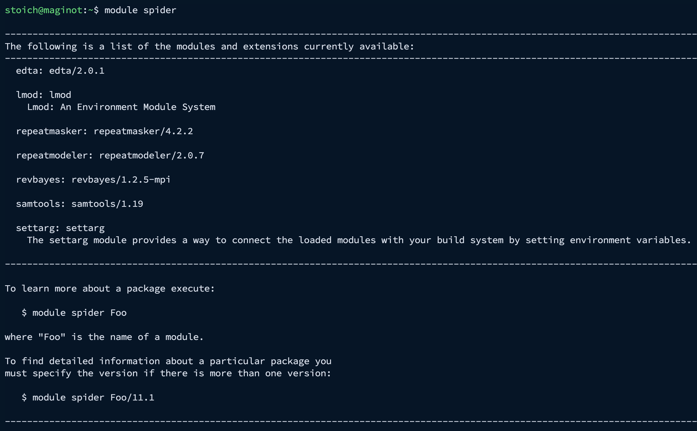
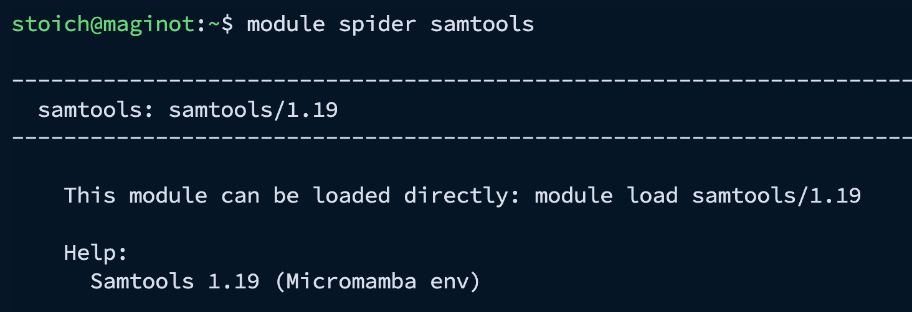
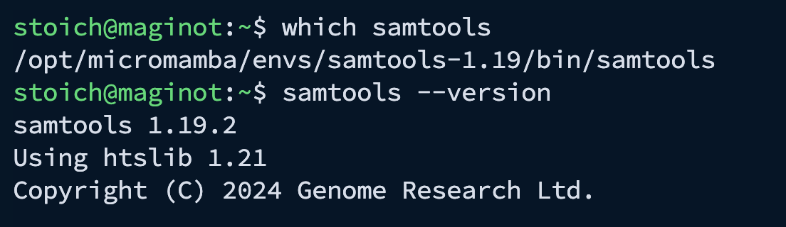
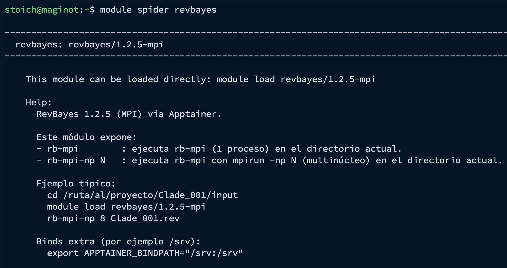
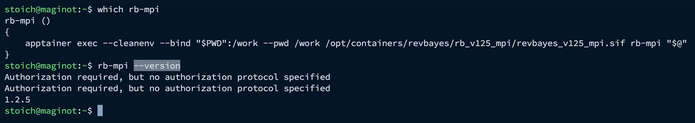

Software en MAGINOT
Objetivo
En MAGINOT el software se ofrece de forma controlada para mantener un entorno **estable, seguro y reproducible**.
Esta sección explica cómo usar el sistema de módulos (Lmod) y, al final, cómo se gestionan herramientas vía Micromamba y Apptainer.
Si necesitas un programa nuevo (importante)
Si el software que necesitas no está disponible como módulo o contenedor, no intentes instalarlo por tu cuenta.
✅ En MAGINOT, la instalación de software que requiere permisos (y la creación/actualización de ambientes) se realiza solo por el administrador.
¿Cómo solicitar software al administrador?
Incluye en tu solicitud:
- Nombre del software
- Versión (si aplica)
- Uso (curso/proyecto)
- Enlace oficial (GitHub/docs) o referencia de instalación (conda/bioconda, contenedor, etc.)
- Requerimientos especiales: MPI, GPU, bases de datos externas, etc.
Cuando el software esté disponible, el administrador te avisará y te indicará si se usa como:
- módulo,
- contenedor Apptainer,
- o dentro de un ambiente Micromamba.
Módulos (Lmod): qué son y cómo se usan
Los módulos permiten activar software instalado en el servidor sin instalar nada en tu cuenta.
Al cargar un módulo, se ajustan variables de entorno (por ejemplo PATH) para que el comando quede disponible.
Ver el catálogo de módulos disponibles
module spider
En este momento (ejemplo real en MAGINOT) aparecen módulos como:
edta/2.0.1repeatmasker/4.2.2repeatmodeler/2.0.7revbayes/1.2.5-mpisamtools/1.19
Cargar un módulo (micromamba)
Buscar información de un módulo
module spider samtools
Cargar un módulo
module load samtools/1.19Verifica:
which samtools
samtools --version
Cargar un módulo (apptainer)
Buscar información de un módulo
module spider revbayes
El módulo revbayes/1.2.5-mpi proporciona RevBayes 1.2.5 con soporte MPI, ejecutándose dentro de un contenedor Apptainer, pero tú lo usas como un módulo normal.
Este módulo expone dos comandos principales:
rb-mpi
Ejecuta RevBayes (1 proceso) en el directorio actual.rb-mpi-np N
Ejecuta RevBayes usandompirun -np N(multinúcleo) en el directorio actual.
Cargar un módulo
module load revbayes/1.2.5-mpiVerifica:
which rb-mpi
rb-mpi --version
Ejemplo de ejecución:
cd /ruta/al/proyecto/Clade_001/input
module load revbayes/1.2.5-mpi
rb-mpi-np 8 Clade_001.revVer módulos cargados
module listDescargar un módulo
module unload samtools/1.19Limpiar el entorno (recomendado si cambias de proyecto)
module purgeConsejos para evitar conflictos
Inicia con
module purgesi vienes de otra sesión/proyecto.Si algo “no corre”, revisa primero
module listy confirma versiones.Si necesitas otra versión, pide al administrador que la agregue como módulo.
Micromamba (ambientes administrados)
Micromamba se usa para mantener ambientes controlados y reproducibles, pero en MAGINOT:
✅ Solo el administrador puede:
crear nuevos ambientes
instalar/actualizar paquetes dentro de los ambientes
👥 Los usuarios no crean ambientes ni instalan paquetes.
Si necesitas un programa por esta vía, solicítalo al administrador.
Cuando esté disponible, se te indicará cómo usarlo.
Ver ambientes disponibles
micromamba env listActivar (cargar) un ambiente
micromamba activate NOMBRE_DEL_AMBIENTEVerifica que el programa ya esté disponible:
which programa
programa --versionVer paquetes instalados en el ambiente
micromamba listSalir del ambiente
micromamba deactivateApptainer (contenedores)
Apptainer es una herramienta de contenedores diseñada para entornos Linux multiusuario (común en HPC).
Permite ejecutar software empaquetado en una imagen (por ejemplo .sif) de forma reproducible, sin tener que instalar dependencias en tu cuenta, y sin requerir privilegios de administrador para correrlo.
En MAGINOT, Apptainer ya está instalado y puede usarse para correr herramientas bioinformáticas dentro de contenedores (propios o institucionales), siempre que tengas permisos de lectura sobre la imagen.
Ejemplos:
apptainer exec imagen.sif comando --helpMontar tu carpeta de trabajo dentro del contenedor:
apptainer exec -B "$PWD":/work --pwd /work imagen.sif comando📌 Si necesitas una guía más completa sobre Apptainer, consulta mi tutorial:
https://cristoichkov.github.io/biocontainers/